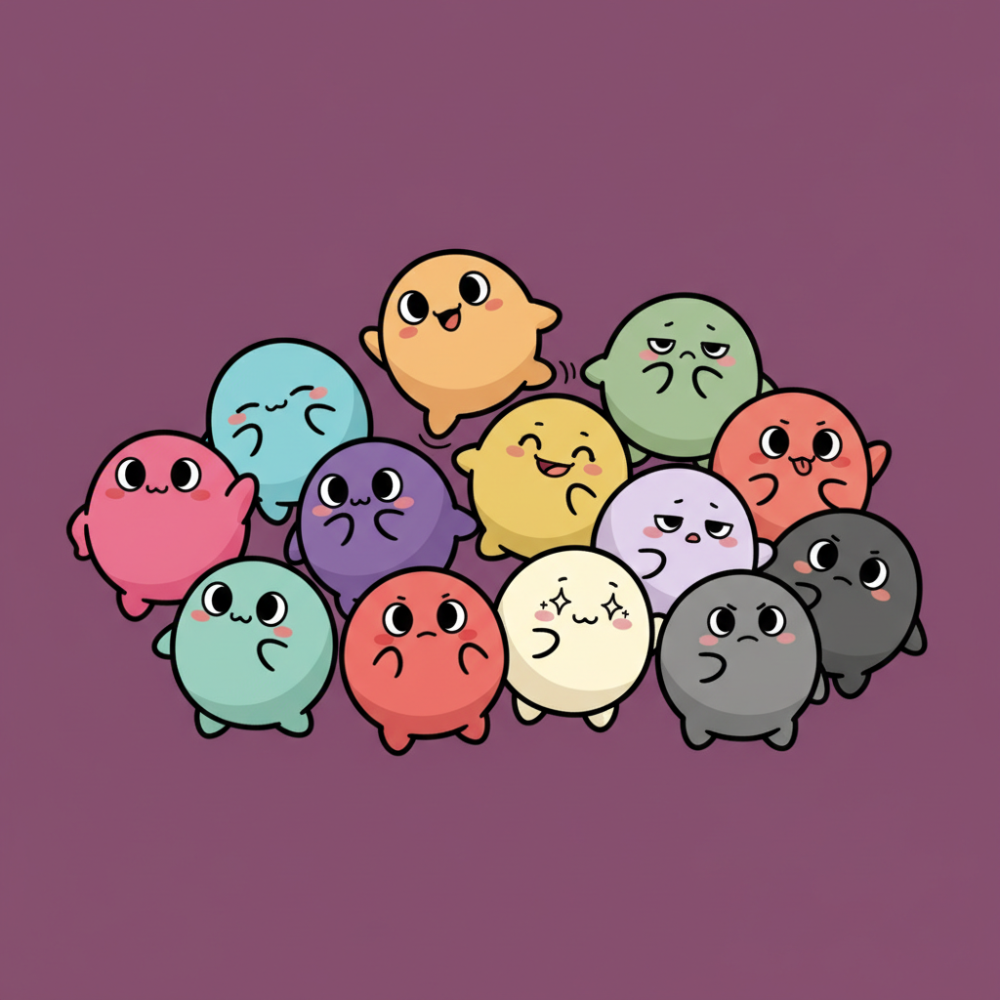
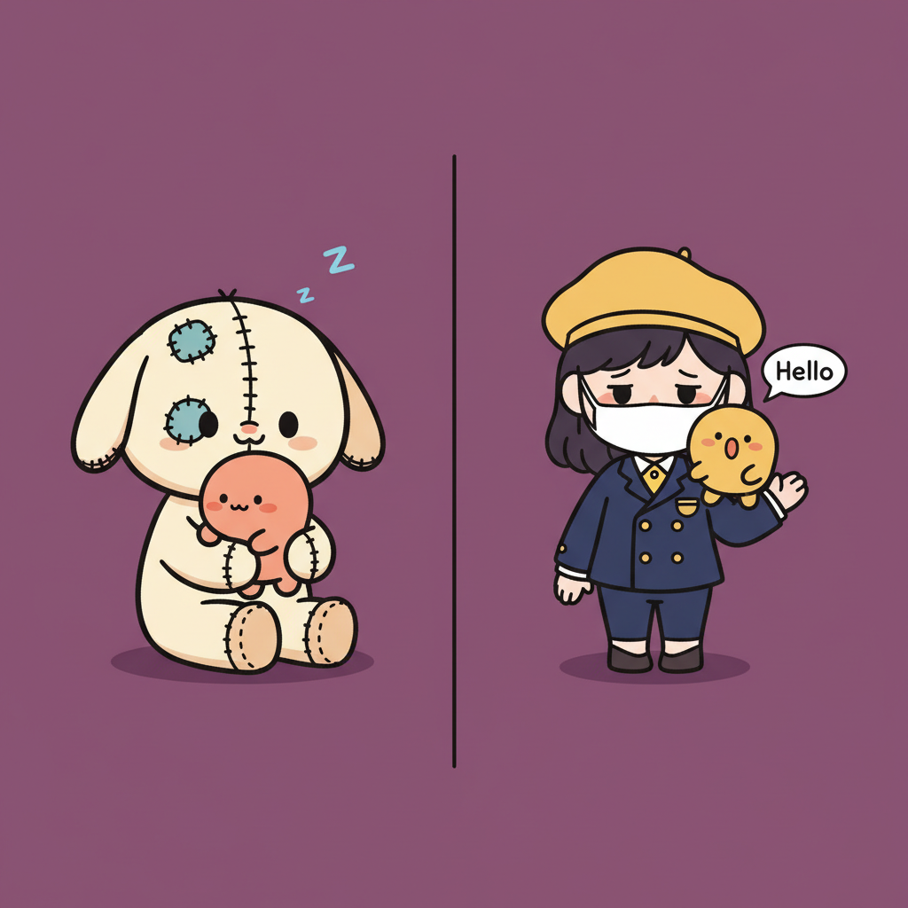

— Wujie Group · Original IP —
UNIPOP CAST
8 個怪奇 × City Pop 設計師玩具角色 ＋ POPS 世界觀
蕪解集團原創 IP — POP MART 美學 × 1980s Japan City Pop × Yoshitomo Nara 神秘質感。每隻有自己的故事、怪奇 hook、翻玩 80s 物件。
2026.05 構思啟動
Cast 8/8 LOCK
Bible v1.0
MIKATOFUBEEPONOKONOVAMOMOSOLOGARLIC
— 全員合影 · 8 角色定版 —
— 01 · About the Cast —
不裝可愛，走怪奇個性
UNIPOP CAST 是蕪解集團原創設計師玩具 IP 群。靈感取自 POP MART 盲盒美學（DIMOO / Crybaby / SKULLPANDA）、Yoshitomo Nara 神秘半閉眼、1980s Japan City Pop（Mariya Takeuchi / Hiroshi Nagai 永井博 / Yuko Higuchi 樋口裕子）。
每隻角色必有：1 個異於常人的怪奇 hook、1 個 asymmetric 簽名細節、1 個 80s 翻玩物件。
Tier 1 · 純好看吸引
Eye-Catchers
怪但美/可愛，當主角眼球吸引第一印象。
MIKA · SOLO
Tier 2 · 引發共情
Empaths
看了被觸動，narrative 引發情感連結。
BEEPO · NOKO · NOVA · MOMO
Tier 3 · 反差襯托
Foils
完全不美不可愛，純對照組襯托前兩梯。
TOFU · GARLIC
— 02 · The Cast · 8 隻角色 —
Meet the Eight
Tier 1 · Eye-catcher
01 / 08
MIKA
葡萄眼觀察少女
「凌晨 2am 的都會少女、拍下她觀察到的場景。葡萄頭飾裡藏的那顆眼睛，是她內在最秘密的觀察者。」
- Hook
- 葡萄頭飾裡藏一顆眼睛看著外界
- Asymmetric
- 左眼半開 + 右眼完全閉一條線
- 80s 翻玩
- Polaroid SX-70 拍立得 + 模糊販賣機照片（Plastic Love MV 感）
- 配色
- 純飽和珊瑚粉襯衫 + 暮光紫高腰短褲 + 紫蓬鬆 bob
- 配件
- sun-gold Sony Walkman + 橘色泡棉耳機
- 家族
- 紫色家族髮（cast 內紫頭代表）
Tier 3 · Foil
02 / 08
TOFU
哀傷豆腐上班族
「墨鏡擋眼淚、手拿致敬可爾必思的 Pocari Tears。但他從未真的孤單 —— 半透明豆腐身體裡有一隻小金魚陪著他。」
- Hook
- 豆腐塊內部左下角藏一隻小金魚（KOI 隱藏室友）
- Asymmetric
- 左白襪 + 右珊瑚粉條紋襪
- 80s 翻玩
- Pocari Tears 罐裝水（致敬 Pocari Sweat：藍水珠 → 藍淚滴）
- 配件
- 卡帶磁帶蝴蝶結（一卷結束的故事）+ 80s 大墨鏡頭頂
- Emotional
- 容器 / 自我吞嚥 — 哀傷但有伴
Tier 2 · Empath
03 / 08
BEEPO
Mac 頭像素少年
「他活在 8-bit 像素世界，用 retro game graphics 跟你溝通。永遠在 ON AIR，永遠在播他的內心。」
- Hook
- Mac 1984 cube 頭 + 螢幕內兩隻 Galaga 蜜蜂像素 sprite + 軟碟一字嘴（無所謂 whatever 表情）
- Asymmetric
- 兩支 cyberpunk 天線（一直一垂掛 ON AIR 粉紅霓虹燈）
- 80s 翻玩
- Sad-pis 玻璃瓶（致敬 Calpis：藍波點 → 藍淚滴波點）
- 配件
- Game Boy 掛脖（螢幕顯示 mini BEEPO sprite，自我遞迴）
- 未來展開
- 螢幕可換 sprite 表情 — 哭 / 跩 / 開心 / 怒 / 害羞變體系列
Tier 2 · Empath
04 / 08
NOKO
廢棄玩偶共生者
「從未被買走的玩偶。他緊抱著另一隻同樣被遺棄的小傢伙。破損但堅韌、孤獨但有伴。」
- Hook
- 抱著一隻迷你 POPS 桃橘色夥伴（被遺棄玩偶相依為命）
- Asymmetric
- 左鈕扣眼 + 右 X 縫線眼 + 一耳完整 + 一耳消失留 X 縫疤
- 80s 翻玩
- 復古吊牌價標掛脖（「從未被買走」narrative）
- 細節
- 身上多處針腳補丁 + 棉花從縫線露出 + 80s 復古貼紙（彩虹 + 笑臉太陽）
- POPS 共生
- 懷裡那隻是桃橘 POPS（worldbuilding 物種）
Tier 2 · Empath
05 / 08
NOVA
月亮頭迷信占星少女
「她自己頭就是月亮，卻還在用塔羅 + 水晶占月亮。抽到 The Moon 一整天不出門、戴黃道吊飾覺得能保平安 —— 可愛又荒唐。」
- Hook
- 月亮頭 + 右側微月蝕陰影 + 5-7 craters + self-referential 詭異 narrative
- Asymmetric
- 月相本身（左亮 + 右陰）
- 80s 翻玩
- Rider-Waite「The Moon XVIII」塔羅卡（黃月+雙塔+池塘龍蝦，NO TEXT）
- 配件
- 右手塔羅卡 + 左手小水晶球 + 紫水晶簇 + 胸前黃道十二宮黃銅吊飾
- 未來展開
- 月相變體系列 — 新月 / 上弦 / 滿月 / 月蝕 / 下弦
Tier 2 · Empath
06 / 08
MOMO
電池頭自循環兒
「他是電池，但永遠沒電。用電線插自己充電卻永遠充不滿、喝牛奶想睡卻睡不著。cast 最矛盾的自循環角色。」
- Hook
- 尾巴電線插頭插在自己左手食指（自我充電失敗循環 + 火花）
- Asymmetric
- 頂部 ⊕ 凸正極 + ⊖ 平負極（雙極自帶 asymmetric）
- 80s 翻玩
- 80s 學校牛奶盒（白底 + 粉橫條 + 睡覺小牛 + Zzz icon + 吸管）
- 配件
- 80s letterman 棒球外套（紫身 + cream 袖 + 閃電 + 星 patch）+ 內搭珊瑚粉 hoodie
- 嘴
- 電量條 icon 當嘴（1/4 充電紅色橫長條）
Tier 1 · Eye-catcher
07 / 08
SOLO
貝雷帽神秘少女
「她永遠戴口罩、從不開口。但肩上的 POPS 小生物替她發言，常常亂講話搞得她很不好意思。沉默主人 + 多話小怪 = 反差喜劇。」
- Hook 1
- 肩膀sun-gold POPS 替她發言（speech bubble 含 "!?"）
- Hook 2
- 頭髮裡藏一張小臉看觀眾
- Hook 3
- 左手6 指（多 1 根 pinky）
- Asymmetric
- 蓋眼瀏海（左眼完全蓋）+ 大金圈耳環（只右耳）
- 服裝
- 80s 黑色貝雷帽（sun-gold button）+ charcoal 高墊肩 oversized 西裝 + 珊瑚粉高領 + cream 高腰寬褲
- 家族
- 紫色家族髮（與 MIKA 同 family hint）
Tier 3 · Foil
08 / 08
GARLIC
自以為帥籃球大蒜男
「他覺得自己是全籃球場最帥的。但腋毛、胯下凸、招搖 BBcall 暴露他其實是大蒜味。純反差襯托其他 cast 的好。」
- Hook
- literal 大蒜頭（蒜瓣紋路 + 紫條紋 + 紅褐根鬚當 80s 飄逸瀏海 Top Gun 風）
- Asymmetric
- 護腕（左珊瑚粉 + 右無）+ 眉毛（左揚右平 cocky）
- 80s 翻玩
- Motorola BBcall / pager 別腰帶（黑塑膠 + 天線 + LCD + 紅燈閃）
- ICK 細節
- 雙腋下濃密腋毛 + 胯下微凸 bulge + cocky 露牙笑（cast 唯一露牙）
- 配件
- 80s 橘籃球（右手轉指尖）+ 金鏈閃電 medallion + 高筒 Air Jordan 鞋（cast 唯一高筒）
- 比例
- cast 最高（vertical fill ~90%）
— 03 · Worldbuilding —
他們不孤單。POPS 無所不在。
POPS 是 UNIPOP CAST 世界觀裡的小怪生物群 — 像 Studio Ghibli 的煤碳精靈 Susuwatari。
圓 blob 身體 + 短觸鬚 + 大圓眼，每色不同個性，無處不在出沒於 cast 周圍。
未來 12 色 POPS 將獨立成系列。

— POPS lineup · 各色 1 隻 · 12 色預計依序登場 —

— Cameo 機制 · POPS 出現在 cast 身上 —
Sun-gold POPS
已出 · SOLO 肩上
— 04 · Internal Narrative —
Cast 不是孤島，他們互相串接
每隻角色有自己的故事，但 cast 內部有 5 條隱藏 narrative 軸線串連他們所有人。
— Thread 01
紫色家族髮
MIKA 紫蓬鬆 bob + SOLO 紫頭髮 — 兩位 Tier 1 主角的家族血緣 hint。同樣紫頭、完全不同氣質：外向觀察者 vs 內向沉默者。
— Thread 02
卡帶 / 音樂宇宙（類比軸）
MIKA Walkman + 卡帶、TOFU 卡帶磁帶蝴蝶結。整個 cast 都活在 80s City Pop 卡帶宇宙裡。
— Thread 03
數位 / 媒介軸
BEEPO Mac 1984 + Game Boy + 8-bit 像素蜜蜂、MOMO 電池 + 電線 + 自循環充電。cast 內 2 隻數位代表，跟類比軸對話。
— Thread 04
POPS 共生軸
NOKO 抱桃橘 POPS、SOLO 肩 sun-gold POPS。未來其他角色可加 POPS cameo — worldbuilding 物種無處不在。
— Thread 05
占星 / 神秘軸
NOVA 月亮頭迷信占星、MIKA 葡萄藏眼觀察者。兩隻都在「找意義」— 透過星象、透過觀察。
— Thread 06
每隻不同 Asymmetric
Cast 鐵則：每隻 asymmetric 不重複。MIKA 玩眼、NOKO 玩眼+耳、MOMO 玩雙極、SOLO 玩瀏海+指、GARLIC 玩護腕+眉 — 簽名各自獨特。
— 05 · Asymmetric Signature —
每隻一個不重複的不對稱
怪奇感的精髓在於「故意不對稱」— 但 cast 每隻必須用不同的方式做這件事，避免重複。
| 角色 | 不對稱簽名 |
|---|
| MIKA | 左眼半開 + 右眼全閉一條線 |
| TOFU | 左白襪 + 右珊瑚粉條紋襪 |
| BEEPO | 兩天線一直一垂掛 ON AIR 霓虹 |
| NOKO | 鈕扣眼 + X 縫眼 + 一耳完整 + 一耳消失留 X 縫疤 |
| NOVA | 月相本身（左亮右月蝕陰影）+ 左紫長襪 + 右 cream 短襪 |
| MOMO | ⊕⊖ 雙極（左凸 + 右平）+ 鞋帶（左綁 + 右鬆）+ 襪（cream + sage green） |
| SOLO | 蓋眼瀏海（左眼完全蓋）+ 大金圈耳環（只右耳）+ 6 指（左手） |
| GARLIC | 護腕（左珊瑚粉 + 右無）+ 眉毛（左揚右平 cocky） |
— 06 · Parody Universe —
80s 物件翻玩致敬宇宙
每隻 cast 都拿一個 80s 經典物件 — 但都是翻玩諷刺版。8 隻一字排開 = 80s City Pop 物件博物館。
MIKA
Polaroid SX-70 + 模糊販賣機照片
致敬 80s Polaroid 即可拍 + Plastic Love MV
TOFU
Pocari Tears 罐
致敬 Pocari Sweat（藍水珠 → 藍淚滴）
BEEPO
Sad-pis 玻璃瓶 + Game Boy
致敬 Calpis 可爾必思 + Nintendo Game Boy 1989
NOKO
復古吊牌價標
「從未售出」narrative — 80s 玩偶吊牌標誌
NOVA
The Moon 塔羅卡 + 紫水晶球 + 黃道吊飾
致敬 Rider-Waite Tarot + 80s 占星復興
MOMO
80s 學校牛奶盒 + Letterman 外套
致敬日本 80s 學校午餐 + 80s 校園 letterman
SOLO
80s 貝雷帽 + 高墊肩西裝
致敬 Mariya Takeuchi "Plastic Love" 1984 fashion
GARLIC
Motorola BBcall + Air Jordan 高筒
致敬 80s Motorola pager + Nike Air Jordan 1985
— 07 · Roadmap —
商業展開 5 個階段
UNIPOP CAST 不是一次性 IP，是長期經營的角色家族。從基本盲盒到跨界、教育延伸，5 個 phase 展開可能性。
Phase 1
基本 8 隻盲盒（V0）8 隻主角各 1 個盲盒角色 + 1 個隱藏款
Phase 2
情緒變體系列BEEPO 螢幕 sprite 變體（哭/跩/開心/怒/害羞）+ NOVA 月相變體（新月/上弦/滿月/月蝕）
Phase 3
POPS 獨立系列12 色 POPS 各 1 隻 + 隱藏款（彩虹色 / 透明 / 發光）
Phase 4
Cast 跨界跟 IP 合作版（cast 穿 IP 衣服）— UNIPOP「裝可愛」原創跨 IP 模型
Phase 5
教育延伸cast ↔ 科學 domain（edutainment thesis）— 2027+ 啟動